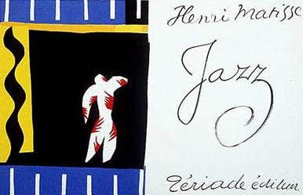

Jazz
Henri Matisse · published 1947 · Artist's book with color stencil (pochoir) prints
In copyright. Look and learn: shown for study, not for download.
Surgery for abdominal cancer in 1941 left Matisse bound to his chair and bed and unable to paint or sculpt, so he cut forms from colored paper instead. His assistants, notably Lydia Delectorskaya, prepared the collages for printing by a stencil process. Tériade issued the book on 30 September 1947, when Matisse was 77, with 20 color prints and the artist's handwritten notes. The publisher gave it the title Jazz; the title originally suggested was The Circus.